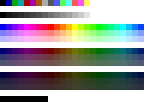

Default color values for FreeBASIC graphics and text screen modes.
FreeBASIC initializes the palette indexes with the colors in the tables below. The colors are the same as in QB. Colors in graphics mode can be changed using the
Palette statement. There is no portable way of changing the palette in console mode.
4 colors: Black and white, and two others
Screen modes 2, 10 and 11
Monochromatic: black and white.
Screen modes 7, 8, 9, 12, and Console
Two sets of 8 colors: normal and intense (bright)
Screen 13 and 8-bit modes
Multiple color and grayscale bands
Screen mode 1
| Value | Name | | 0 | black | | 1 | cyan | | 2 | magenta | | 3 | white |
Screen modes 2, 10 and 11
Screen modes 7, 8, 9, 12, and Console
| Normal Value | Normal Name | Intense Value | Intense Name | | 0 | black | 8 | dark grey | | 1 | blue | 9 | bright blue | | 2 | green | 10 | bright green | | 3 | cyan | 11 | bright cyan | | 4 | red | 12 | bright red | | 5 | pink | 13 | bright pink | | 6 | yellow | 14 | bright yellow | | 7 | grey | 15 | white |
| Screen 13 and 8-bit modes

Screen 12 color band
Colors 0 through 15 are the same as screen 12 mode.
Grayscale band
Colors 16 through 31 are grayscale from black to white.
Brightness/saturation bands
3 bands of decreasing brightness, each containing 3 bands of decreasing saturation, each containing 24 hues of color starting and ending at blue.
| Name | HB/HS | HB/MS | HB/LS | MB/HS | MB/MS | MB/LS | LB/HS | LB/MS | LB/LS | | blue | 32 | 56 | 80 | 104 | 128 | 152 | 176 | 200 | 224 | | magenta | 36 | 60 | 84 | 108 | 132 | 156 | 180 | 204 | 228 | | red | 40 | 64 | 88 | 112 | 136 | 160 | 184 | 208 | 232 | | yellow | 44 | 58 | 92 | 116 | 140 | 164 | 188 | 212 | 236 | | green | 48 | 72 | 96 | 120 | 144 | 168 | 192 | 216 | 240 | | cyan | 52 | 76 | 100 | 124 | 148 | 172 | 194 | 220 | 244 |
Colors 248 through 255 are black.
|